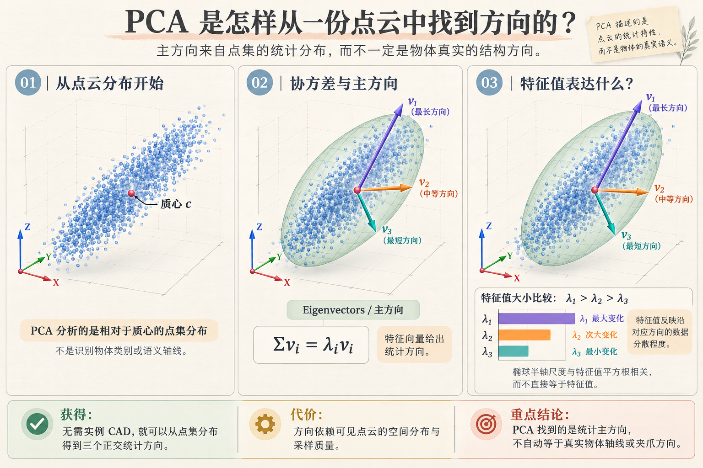
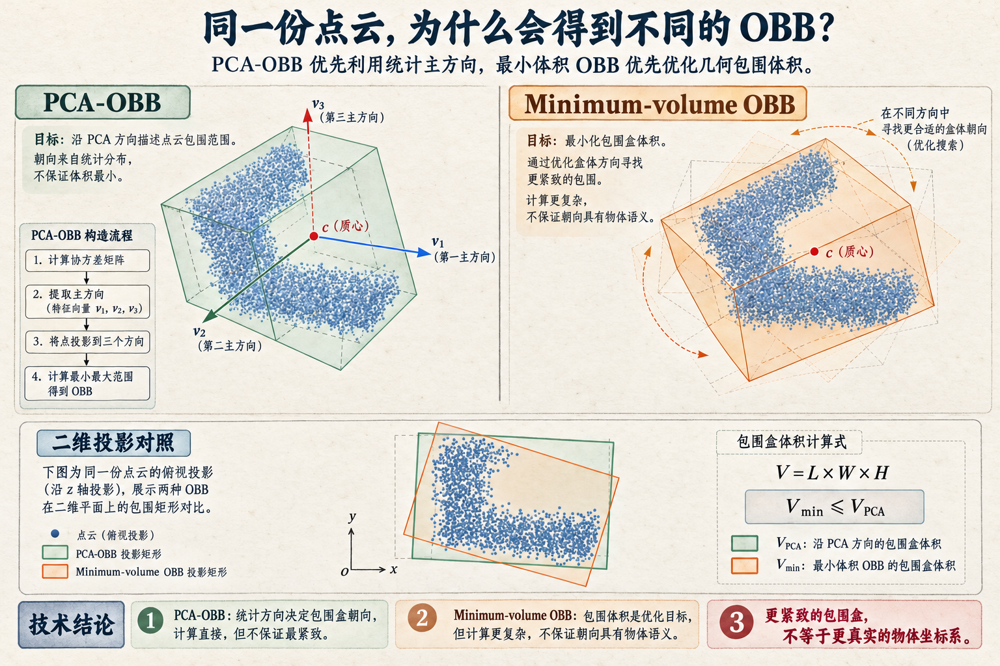
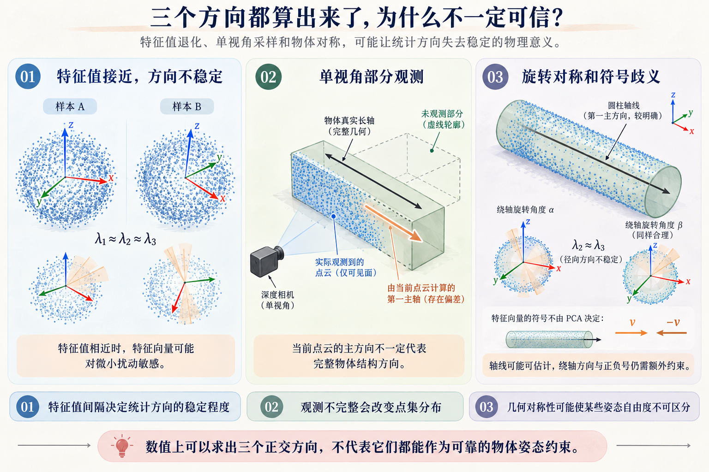

1901
Karl Pearson · 最佳拟合直线与平面
On Lines and Planes of Closest Fit to Systems of Points in Space
研究空间点集的最佳拟合直线与平面，以正交平方距离为几何准则，为后来的主成分几何解释奠定基础。
获得的能力用一条线或一个平面概括点云主要分布，无需给出物体类别。
代价与边界最优是相对于点集平方误差；异常点与不均匀采样会改变拟合结果。
点云主轴、最紧致的包围盒朝向，以及物体真实的结构轴线，常常被写在同一份几何笔记里，却不一定是一回事。这篇把代表方法、优化目标、技术代价与工程判断整理清楚，不再重复 Q01 的研究故事。
如果一份点云是细长的，PCA 往往可以迅速找到它延伸得最远的方向；但这个方向不一定是物体真正的轴线，也不意味着沿它建立的盒子最紧。
PCA 寻找点集方差最大的正交方向，描述当前采样怎样分布。
OBB 选择一个三维旋转坐标系，使点集能够被有向长方体包围；不同构造法有不同目标。
圆柱轴线、盒体棱边、装配基准轴等物体固有方向，可能需要额外形状或任务约束。
这里的 PCA 主方向来自数据；“真实结构方向”通常来自物体定义或可靠的几何模型。两个坐标系即使数值接近，也不能仅凭相似就视为同一概念。
这条发展路线的核心不是识别瓶子或盒子，而是寻找能够有效描述点集变化与空间分布的坐标方向。
研究空间点集的最佳拟合直线与平面，以正交平方距离为几何准则，为后来的主成分几何解释奠定基础。
系统发展主成分分析，以彼此正交的分量刻画多变量数据变化。放到三维点云中，就能通过中心化数据的协方差矩阵得到三条主方向。
μ 是当前点云质心，vᵢ 是协方差矩阵的单位特征向量，λᵢ 是沿该方向的分布方差。通常按 λ₁ ≥ λ₂ ≥ λ₃ 排列；当 λ₁ 明显大于其余两个，v₁ 往往能提供较明确的细长方向。
对中心化点矩阵做 SVD，是获得相同主方向的常见数值实现路径；SVD 不是与 PCA 竞争的另一种物体轴线定义。
v 与 −v 都是合法方向。特征分解只给出“轴线”，不会自动决定夹爪应朝轴线哪一侧靠近。
images/q01-orientation-fig-01-pca-principal-directions.png
有了三条主方向之后，可以沿它们计算点云的有向包围盒。但让点集按 PCA 方向被包住与寻找尽量小体积的包围盒，是两种不同的优化目标。
从点云或凸包估计 PCA 方向，将点变换到该坐标系；分别取三个坐标方向上的最小值与最大值，再变换回原坐标系。
在合法旋转中寻求体积尽可能小的包围盒，利用凸包几何与方向搜索。精确算法与近似算法在计算成本和保证上有所区别。
R 为候选正交坐标系。对于每个 R，extent 是输入点沿对应坐标轴的最大与最小投影之差；最小体积路线优化 V(R)，PCA-OBB 则先由 PCA 确定 R。
研究如何寻找包含给定三维点集的最小体积长方体，为最小包围盒问题提供经典的精确计算几何路线。
研究三维点集最小体积包围盒的近似算法，以可控的体积近似误差换取更高的计算效率；说明包围盒领域也存在“优化质量与成本”的折中。
images/q01-orientation-fig-02-pca-vs-minimum-volume-obb.png
数值算法总可以输出向量，但有向量不等于方向受到充分观测约束。尤其在单视角 RGB-D 下，需要区分三类不确定性。
当 λ₁ 与 λ₂ 接近时，两者对应的方向在噪声下可能明显旋转；当三个特征值都接近时，点集整体没有突出的统计主轴。对理想圆柱，轴向可能稳定，但横截面内的两个轴未必唯一。
相机只采样前表面；遮挡、缺深度、目标 Mask 和稠密区域都会改变协方差。PCA 只能解释这些实际进入算法的点，不能自动补偿背面未测到的形状。
PCA 的 v 与 −v 等价；圆柱绕轴旋转也可能不能由无纹理几何区分。即使已经求出可信的主轴，仍要根据桌面法线、相机视角、接近方向或预定抓法定义完整夹爪姿态。
images/q01-orientation-fig-03-pca-direction-reliability.png
这里不比较算法谁更“高级”，只比较当前到底要什么约束，以及为此需要承担的假设。
| 真实需求 / 观测条件 | 优先思路 | 选择之前必须检查 |
|---|---|---|
| 细长目标，想快速估计主轴 | PCA / SVD | 特征值是否拉开、可见点分布是否代表目标 |
| 需要快速给当前点集一个有向包围范围 | PCA-OBB | 不追求最小体积；方向是否受部分点云影响 |
| 需要尽量紧致的碰撞包围体积 | 最小体积或近似最小体积 OBB | 所用实现的近似程度、计算代价与离群点影响 |
| 长方体、圆柱等结构明确 | 平面 / 棱线 / 圆柱轴线拟合 | 形状假设是否成立，可见局部是否足够 |
| 只有局部平面，整体点云很残缺 | 局部法线 + 任务方向 | 法线稳定性与绕法线的剩余旋转自由度 |
| 对称或特征值相近 | 补充可靠约束或保留多候选 | 不要把没有观测依据的方向当成唯一解 |
要什么：统计主轴、紧致包围，还是物体棱边 / 夹爪方向？
信什么：当前点云分布、凸包范围，还是可靠的形状结构？
还缺什么：符号方向、剩余旋转自由度，还是稳定的观测条件？
对机器人抓取而言，包围盒可以提供空间线索，但它不是夹爪坐标系。将这些方向构造为 Grasp Pose 仍需根据具体抓法做坐标轴约定、正交化与验证。
基础矩阵分解与包围盒提取应优先复用成熟库。尤其要核对接口内部究竟是对原始点做 PCA、对凸包做 PCA，还是在优化体积。
import numpy as np
xyz = np.asarray(xyz, dtype=np.float64)
xyz = xyz[np.isfinite(xyz).all(axis=1)]
if len(xyz) < 3:
raise ValueError("有效点数不足")
center = xyz.mean(axis=0)
X = xyz - center
_, singular_values, vt = np.linalg.svd(X, full_matrices=False)
main_axis = vt[0] # 无符号的第一主轴
variances = singular_values**2 / len(xyz)
# 若前两个方差非常接近，主方向可能不稳定。# pcd: open3d.geometry.PointCloud
pca_obb = pcd.get_oriented_bounding_box()
optimized_obb = pcd.get_minimal_oriented_bounding_box()
print("PCA-like OBB volume:", pca_obb.volume())
print("Optimized OBB volume:", optimized_obb.volume())在当前 Open3D 文档中，legacy 的普通 OBB 基于凸包 PCA；legacy 的 minimal 路线是体积优化，但文档同时提示其算法不保证严格全局最小。需要明确最小体积算法时，应核对 Tensor API 的 MINIMAL_JYLANKI 与安装版本。
// 在合适的点类型与输入点集上使用：
// pcl::computeCentroidAndOBB(...)
// pcl::MomentOfInertiaEstimation<PointT>
// 两者得到的 OBB 均不能直接等同于最小体积 OBB。里程碑优先给原论文，工程做法优先给官方 API。历史与实现属于不同证据层次，避免从当前代码行为倒推历史贡献。
PCA 可以把点云的统计主方向量得很清楚；OBB 可以把当前点集包围得更合适。但两者都不会自动证明自己已经得到真实的物体姿态或抓取方向。
以后先选择所需的空间约束，再检查可观测性与数据稳定性。若当前点云无法给出可靠方向，就结合局部表面、几何基元或任务条件，而不是不断更换名字相似的 OBB 算法。